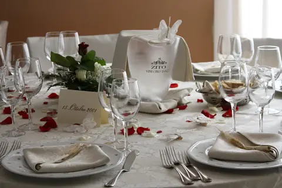
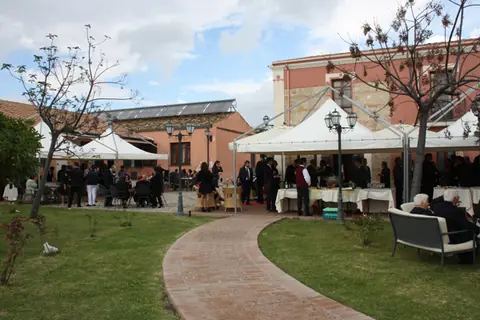
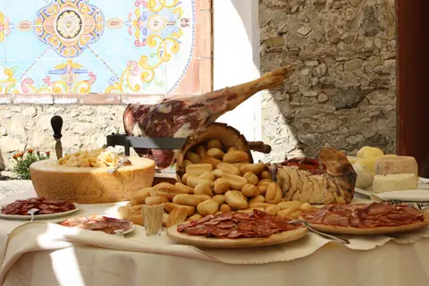
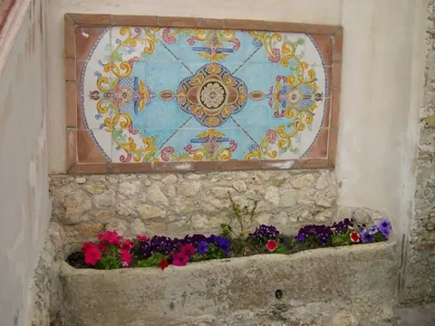

Home / Ristorante e ricevimenti
La tavola
Sapori di una volta, dai nostri campi
Le sale interne e il ristorante all'aperto con il barbecue: piatti tipici della cucina calabrese e mediterranea, preparati con frutta, verdura, olio e carni dell'azienda.
Il ristorante
Tradizione e innovazione, in armonia.
La nostra carta mette insieme la cucina calabrese con piatti di carne e di pesce. Riproponiamo volentieri ricette regionali diventate ormai introvabili, accanto a una selezione di vini calabresi.
Aperto anche a chi non soggiorna da noi: conviene prenotare.
Quando siamo aperti
- Dal 22 maggio al 30 settembre
- tutte le sere
- Resto dell'anno
- domenica a pranzo
- Banchetti e cerimonie
- tutto l'anno

Ricevimenti
Matrimoni, battesimi, cresime e cerimonie.
La varietà delle portate, il servizio e la bellezza del luogo fanno di ogni evento un pranzo da ricordare. L'angolo bar, le sale interne e l'ampia veranda accolgono oltre duecento invitati; il patio e il solarium a bordo piscina completano gli spazi.
- Veranda per oltre 200 coperti
- Sale climatizzate con riscaldamento a pavimento e filodiffusione
- Forno a legna, barbecue all'aperto, cucina moderna
- Pista da ballo e parcheggio privato
In cucina lo chef Manuel Loprete, in sala il maître Mariano Mazzei.


